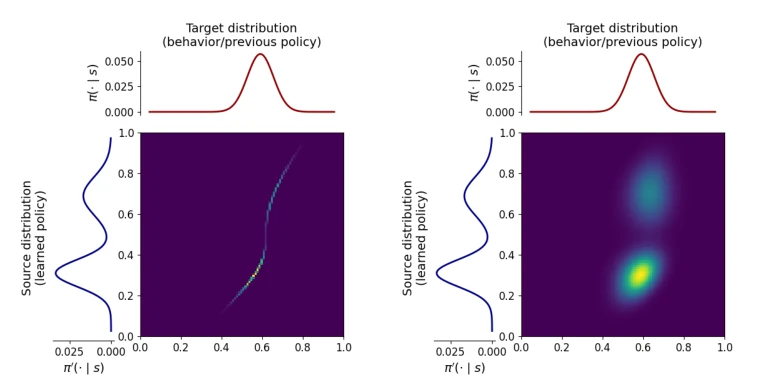
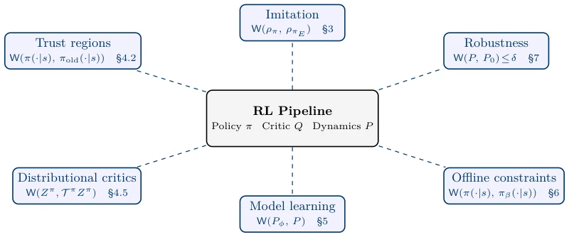
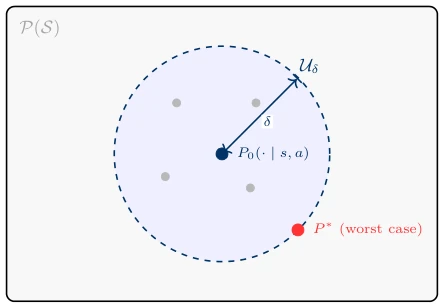

Optimal Transport Meets Reinforcement Learning: A Survey
Yujie Zhu, Charles A. Hepburn, Matthew Thorpe, Giovanni Montana abspdf
论文点评Review
这篇综述像是一场精心策划的“相亲大会”，把Optimal Transport (OT) 和 Reinforcement Learning (RL) 强行撮合，试图解决两者“性格不合”的痛点。亮点在于它极其清晰地指出了传统散度（如KL、JS）在分布重叠弱时的“哑火”现象，并论证了OT如何利用几何成本（ground cost）在分布不重叠时依然提供有效梯度，这确实是RL界的“救命稻草”。但吐槽点也很明显：文章虽然把OT在RL中的角色（奖励信号、正则项、信任域等）梳理得头头是道，却像是一个只会画饼的架构师，缺乏对计算复杂度这一“拦路虎”的深刻反思。对于大规模RL问题，OT的O(N^3)甚至O(N^2)复杂度简直是灾难，文中虽然提到了Sinkhorn和Sliced Wasserstein，但更多是罗列而非深入探讨其在实时控制中的实际瓶颈。此外，将如此复杂的数学工具包装成“通用解药”，容易让读者产生“只要用了OT就能解决分布偏移”的错觉，忽略了成本函数设计不当带来的“几何误导”风险。总的来说，这是一篇优秀的“地图”，但还没能完全解决“路难走”的问题。
This review resembles a carefully orchestrated "blind date," forcibly matchmaking Optimal Transport (OT) and Reinforcement Learning (RL) to attempt to resolve the pain point of their "incompatibility." The highlight lies in its extremely clear identification of the "misfire" phenomenon of traditional divergences (such as KL, JS) when distribution overlap is weak, and its argumentation on how OT leverages geometric cost (ground cost) to provide effective gradients even when distributions do not overlap, which is indeed a "lifeline" for the RL community. However, the criticisms are also obvious: although the article organizes the role of OT in RL (reward signals, regularization terms, trust regions, etc.) logically, it resembles an architect who only draws pies, lacking deep reflection on the "roadblock" of computational complexity. For large-scale RL problems, OT's O(N^3) or even O(N^2) complexity is simply a disaster. Although the article mentions Sinkhorn and Sliced Wasserstein, it is more of a listing than an in-depth discussion of their actual bottlenecks in real-time control. Furthermore, packaging such complex mathematical tools as a "universal remedy" easily creates an illusion among readers that "using OT alone can solve distribution shift," ignoring the risk of "geometric misguidance" arising from improper cost function design. Overall, this is an excellent "map," but it has not yet fully resolved the problem of "difficult roads."
研究动机Motivation
强化学习（RL）的核心往往隐含着对概率分布的比较，例如策略诱导的状态访问分布与专家分布的对比（imitation learning），或学习策略与离线数据分布的对比（offline RL）。然而，现有的主流方法多依赖f-散度（如KL散度、Jensen-Shannon散度）来衡量分布差异。这些散度在分布重叠良好时表现尚可，但在RL常见的分布偏移（distribution shift）场景下，即当学习者的足迹与专家或数据分布重叠极弱甚至不重叠时，它们会失效。例如，Arjovsky & Bottou (2017) 指出，在模仿学习早期，学习者访问了专家从未访问的状态，导致JS判别器饱和，梯度消失；KL散度则可能因分母为零而发散或无定义。Birrell et al. (2022) 也强调了f-散度在弱重叠下的脆弱性。这种“信号缺失”正是RL在复杂任务中难以收敛或泛化能力差的关键原因。因此，研究动机在于寻找一种能够感知几何结构、即使在分布不重叠时也能提供有效梯度的度量工具。Optimal Transport (OT) 通过计算将概率质量从一个分布移动到另一个分布的最小成本，天然地编码了任务几何（ground cost），使得即使两个分布完全分离，OT距离依然能反映它们之间的几何距离，从而为RL提供了更鲁棒的优化信号。
The core of Reinforcement Learning (RL) often implicitly involves comparing probability distributions, such as the comparison between policy-induced state visitation distributions and expert distributions (imitation learning), or between learned policies and offline data distributions (offline RL). However, existing mainstream methods mostly rely on f-divergences (such as KL divergence, Jensen-Shannon divergence) to measure distribution differences. These divergences perform adequately when distribution overlap is good, but in RL's common distribution shift scenarios, i.e., when the learner's footprint overlaps very weakly or not at all with expert or data distributions, they fail. For example, Arjovsky & Bottou (2017) pointed out that in early imitation learning, the learner visited states never visited by the expert, causing JS discriminator saturation and gradient vanishing; KL divergence may diverge or be undefined due to a zero denominator. Birrell et al. (2022) also emphasized the fragility of f-divergences under weak overlap. This "signal loss" is precisely the key reason why RL struggles to converge or exhibits poor generalization in complex tasks. Therefore, the research motivation lies in finding a metric tool capable of perceiving geometric structure and providing effective gradients even when distributions do not overlap. Optimal Transport (OT) calculates the minimum cost to move probability mass from one distribution to another, naturally encoding task geometry (ground cost), such that even if two distributions are completely separated, the OT distance can still reflect the geometric distance between them, thereby providing a more robust optimization signal for RL.

Figure 4: Example of optimal transport between two continuous distributions. The heatmap in the left figure shows the standard OT plan, and the right figure shows the entropy-regularised OT plan (ε = 0.01), which is smoother. Brighter colour indicates more mass is transported.
This review does not propose a single new algorithm, but constructs a systematic classification framework, categorizing the application of OT in RL into five core roles: reward signal, regularization term, trust region constraint, ambiguity set, and model loss. The overall logic revolves around "which two distributions to compare," "which OT form to use," and "how to handle temporal structure." First, in imitation learning (IL), OT is used to match the learner's and expert's state-action occupancy measures, replacing traditional adversarial loss with Wasserstein distance (such as W1), utilizing WGAN-style discriminators (critic) to provide geometry-aware reward signals, addressing the issue of insufficient early training signals. Second, in policy optimization, OT is employed as a trust region constraint, replacing KL divergence, ensuring policy updates consider not only likelihood ratios but also respect the geometric structure of the action space, preventing policy collapse. In model-based RL, OT is used to minimize the Wasserstein distance between the learned dynamic model and the true environment transition distribution, thereby enhancing model robustness. In offline RL, OT constraints are used to limit the extent to which the learned policy deviates from the behavior policy, preventing out-of-distribution (OOD) actions. Furthermore, for cross-domain transfer, Gromov-Wasserstein (GW) is introduced to handle the alignment of different spatial structures, while for cases of incomplete data or outliers, Partial OT or Unbalanced OT is adopted to allow incomplete mass matching. In terms of computational implementation, the review emphasizes the importance of Entropic Regularization combined with Sinkhorn iterations to balance computational efficiency and smoothness, and discusses the critical role of cost function (ground cost) design, such as using Euclidean distance, kinematic distance, or feature space distance.

Figure 1: Where optimal transport enters the RL pipeline. Each spoke represents a distinct role that OT plays, with the representative objective and section reference. Here W denotes a generic OT-based discrepancy, which may differ across applications, e.g., W1, W2 or an entropy-regularised formulation. Additional roles not shown include safety constraints (Sections 7.2, 7.3), preference alignment (Section 7.4), transfer and curricula (Sections 7.6, 8.3), and multi-policy/multi-agent diversity (Section 8).
实验Experiments
由于本文是一篇综述（Survey），其“实验”部分并非指作者进行的特定数值实验，而是对现有文献中广泛验证的OT-RL方法的效果进行归纳和对比分析。文中回顾了多个领域的实证结果：在模仿学习中，基于Wasserstein距离的方法（如Xiao et al., 2019; Luo et al., 2023b）在机器人抓取和导航任务中，相比基于KL散度的GAN方法，在训练初期表现出更稳定的收敛和更高的成功率，特别是在专家数据稀疏或分布偏移严重的场景下。在离线RL中，基于OT的约束（如Wu et al., 2019）被证明能有效防止策略在未见状态空间上的过度泛化，提升了在复杂基准测试（如D4RL）上的性能。在鲁棒控制领域，Wasserstein模糊集（Yang, 2017）被证实能显著提升策略在对抗扰动下的生存率。消融分析方面，综述指出熵正则化系数ε的选择至关重要：过小导致计算不稳定，过大则抹平几何细节；同时，成本函数的设计（如是否包含任务特定的运动学约束）直接决定了算法的成败。主要发现是，OT并非万能，其有效性高度依赖于成本函数的合理构建和计算资源的匹配，且在处理高维轨迹时仍面临可扩展性挑战。
Since this paper is a survey, its "experiments" section does not refer to specific numerical experiments conducted by the authors, but rather a synthesis and comparative analysis of the effects of OT-RL methods widely verified in existing literature. The article reviews empirical results across multiple domains: in imitation learning, methods based on Wasserstein distance (such as Xiao et al., 2019; Luo et al., 2023b) in robot grasping and navigation tasks, compared to GAN methods based on KL divergence, demonstrate more stable convergence and higher success rates during the early stages of training, particularly in scenarios where expert data is sparse or distribution shift is severe. In offline RL, OT-based constraints (such as Wu et al., 2019) have been proven to effectively prevent the policy from over-generalizing on unseen state spaces, improving performance on complex benchmark tests (such as D4RL). In the field of robust control, Wasserstein ambiguity sets (Yang, 2017) have been confirmed to significantly improve the survival rate of policies under adversarial perturbations. Regarding ablation analysis, the review indicates that the choice of the entropy regularization coefficient ε is crucial: too small leads to computational instability, while too large flattens geometric details; meanwhile, the design of the cost function (such as whether it includes task-specific kinematic constraints) directly determines the success or failure of the algorithm. The main finding is that OT is not a panacea; its effectiveness highly depends on the reasonable construction of the cost function and the alignment with computational resources, and it still faces scalability challenges when handling high-dimensional trajectories.

Figure 12: The Wasserstein ambiguity set for distributionally robust RL. The nominal transition P0(· | s, a) (dark-blue dot) sits at the centre of a Wasserstein ball Uδ = {P : Wp(P, P0) ≤δ} inside the space of transition distributions P(S). Grey dots denote other candidate distributions inside the ball. The worst-case is represented by P ∗(red dot). Two modelling choices shape this game: the ground metric d determines which perturbations are considered admissible (through the Wp geometry), while the radius δ controls how far models may move away from the nominal one, determining the conservatism of the resulting policy.